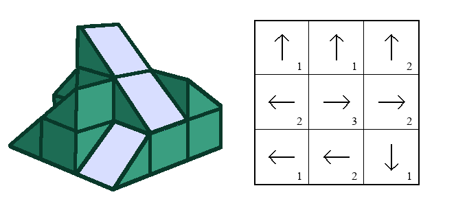

In high school, I spent a lot of time working on art and always liked to add mathy twists to my projects. Usually this was in the form of puzzles, codes, and references to other fields liked linguistics and computer science, but sometimes I would have an idea which would require some calculations to even get started on. One project I never got around to was my idea for 'mirror sculptures.' This was in part because I didn't have the tools necessary to build the sculpture but also because it was hard for me to plan out (most of my planning was done with pencil and paper which seemed like it would be hard to do with this project).
These would be similar to cylindrical mirror art but would be gridded and have many more variations. Each sculpture would consist of wooden cubes stacked at various heights with a 45-degree mirror attached to the top facing in one of the four possible directions. Mirrors would reflect drawings on the sides of the sculpture upward to reveal the hidden image. This idea especially interested me since the number of unique sculptures to make was enormous as the size of the grid grew and, if planned correctly, I could hide multiple images that only the corresponding sculpture would reveal.

An example of a valid but non-perfect sculpture with its top-down visualization
Recently, I've created a tool to help generate and visualize sculptures before trying to build one. The code has three modes, Premade Image Viewing, Image Drawing, and Reflection Drawing. Before going into these, I will explain some terminology I've been using. Sculptures are N x N grids of blocks each having a direction and a height. Directions are values 1 to 4 which start at the top and go clockwise and heights are values 1 to N. The line of sight of a block is the set of blocks in the direction the block is pointing. A valid sculpture is a sculpture for which all blocks have a height strictly greater than the blocks in their line of sight (ie. none are blocked by another). A perfect sculpture is a valid sculpture whose blocks reflect exactly all N x N possible grid cells on an image. That is, if we write the digits 1 through N^2 in the cells of an image, each number would appear in the reflection exactly once when we move the image to each of the four possible locations.
Now we can take a look at some of the features of the tool:
Premade Image Viewing
We can place premade images along either premade or random sculptures to see what the reflection will look like. Randomized sculptures are not guaranteed to be either valid or perfect but can be any size.
Premade images on random sculptures of sizes 3 and 10
Image Drawing
In this mode, the user is able to draw each of the four images surrounding the sculpture separately and view what the corresponding reflection would be at the top. Here, you can see a user drawing each of the images with the mouse, press space to view the top-down sculpture visualization, and then hovering over the sculpture to see which image piece corresponds to which part of the reflection.

Image drawing tool on the example sculpture above
Reflection Drawing
Reflection drawing is the most useful of all 3 tools. It enables us to draw what we would want to see reflected in the sculpture and then creates the images needed to produce such a reflection.